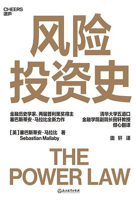
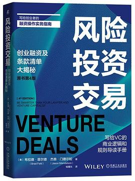
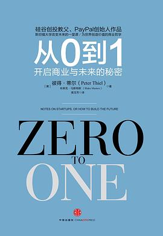
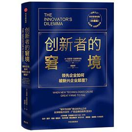
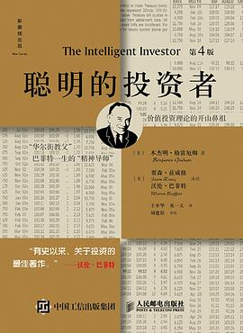

塑造我投资框架的书，和每天真正在用的工具。只推荐读过、用过、值得时间的。





科技与创投信息流的三个层级：战略分析、赛道扫描、一手爆料。
全球融资事件与机构画像的基础数据库，免费档够用。
官方信源：公告、年报、问询函，A股研究第一站，免费。
本地 Markdown + 双链，本站选题库与素材库的管理工具。
把微信读书/Kindle/文章划线自动汇聚成卡片，重读率翻倍。
跨市场图表与筛选器，免费档覆盖美股/A股基础需求。